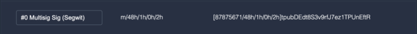
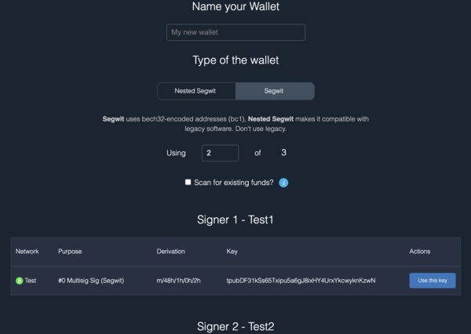
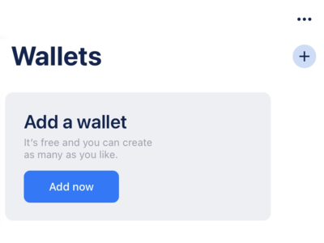
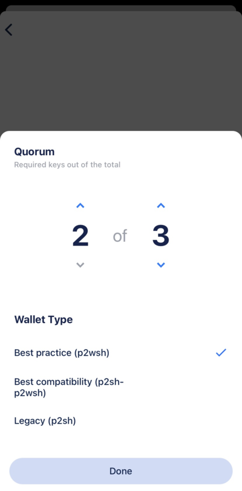
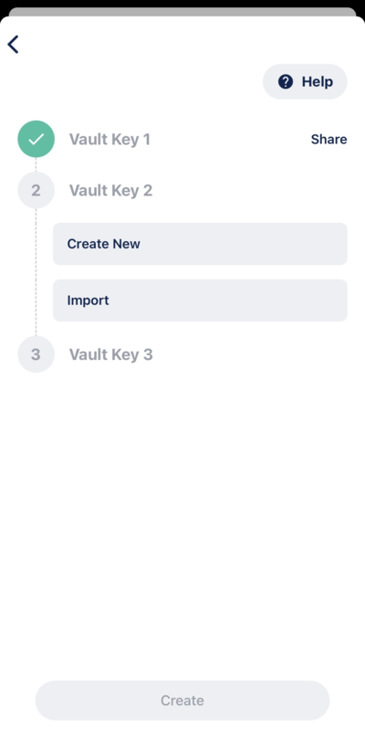
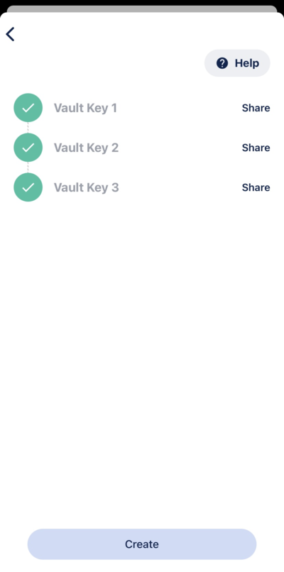
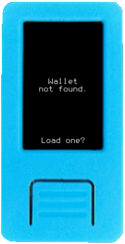
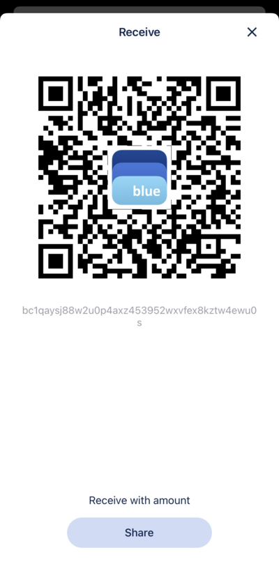
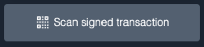

Using a Multisig Wallet
This guide assumes you have already created a mnemonic for each cosigner that will be in your multisig wallet. If that is not the case, head over to the Generating a Mnemonic page and complete those steps first.
When entering your mnemonics into Krux, make sure to select Multisig for all keys in your multisig. The choice of single-sig vs. multisig at this point will change the derivation path used to generate your master extended public key (xpub) which will affect how wallet software handles it.


Selecting Multisig will derive an xpub using the derivation path m/48'/0'/0'/2' on mainnet and m/48'/1'/0'/2' on testnet, which indicates to wallet software that a Multisig Wallet script type should be used, specifically the Native Segwit script P2WSH, or just wsh.
Create the wallet¶
In Specter Desktop, you will need to import your public key by adding a new device. Press the Add new device button on the left side of the app.

Krux is not listed as one of the available device types on the Add Device screen, so you will need to select the Other option.

You will be taken to the Upload Keys screen where you can choose to Scan QR code.

On your Krux, navigate to the Extended Public Key option under the main menu and show the first QR code to Specter Desktop.


It should import the xpub and display the Purpose as #0 Multisig Sig (Segwit).

Give the device a name and press Continue. You should see the new device in the devices list on the left side of the app.

Repeat this process for every key that will be in your multisig wallet.
Once all key devices have been added, you can make a wallet using them. Press the Add new wallet button on the left side of the app.

Choose to create a Multisignature wallet when it asks which type of wallet you want on the following screen.

Select the devices you just added and press Continue.

Give your wallet a name, make sure to select Segwit for the wallet type, and decide how many of your keys are required to sign a transaction, then press Create wallet.

Congrats, you just created a multisig wallet!
In Sparrow, create a new wallet by going to File > New Wallet and give it a name.

On the wallet screen, make sure to select a Multi Signature policy type with the Native Segwit (P2WSH) script type. Here you can decide how many keys will be in your multisig and how many should be required to sign a transaction.

Now, you will need to import your public key. To do so, press the Airgapped Hardware Wallet button under Keystores. On the screen that pops up, Krux is not listed as one of the available device types, so look for the Specter DIY option and click its Scan... button.

On your Krux, navigate to the Extended Public Key option under the main menu and show the first QR code to Sparrow.
It should import the xpub and show a key under Keystores like the following:

Repeat this process for every key that will be in your multisig wallet.
Once all keys have been added, click the blue Apply button to create your wallet.
Congrats, you just created a multisig wallet!
In BlueWallet, create a new wallet by either pressing the + button or scrolling to the right until you see the Add now button.

On the screen that pops up, add a name for your wallet, tap on Vault, and tap Create to begin creating a multisig wallet.

On the following screen, you can proceed with the defaults or adjust the number of cosigners (default is 2-of-3) as needed by going into the Vault Settings. Make sure to leave the script type as p2wsh.


Continue and you will be taken to a screen where you can import your keys.
Tap Import under the first Vault Key.

Tap again on Scan or import a file to begin scanning a QR code.
On your Krux, navigate to the Extended Public Key option under the main menu and show the first QR code to BlueWallet.
You should see a green checkmark next to the key if successful.

Repeat this process for every key that will be in your multisig wallet.
Once all keys have been added, tap Create.

From here, you can send or receive.

Congrats, you just created a multisig wallet!
Load the wallet into Krux¶
Note: While not required, it is strongly recommended to load your multisig wallet into Krux before signing a PSBT as it will allow the device to verify that the transaction it is signing has the correct list of cosigners as defined in the wallet. It is also useful if you wish to print a backup of the wallet or visually inspect the list of cosigners being output by your wallet coordinator.
Load the wallet into Krux by going to the Settings page in Specter Desktop, then click the Export tab. There, press the Export button to display a QR code of your wallet.

In Krux, select the Wallet menu item option and scan the QR code.


If it worked, Krux should display the wallet information that it loaded:


Load the wallet into Krux by going back to the Settings page in Sparrow, then click the Export... button at the bottom of the screen and find Specter Desktop in the options list that pops up. Click its Show... button to display a QR code that you can import into Krux.

In Krux, select the Wallet menu item option and scan the QR code.
If it worked, Krux should display the wallet information that it loaded:
Load the wallet into Krux by tapping the ellipsis in the top-right to see the wallet settings.
From here, tap Export Coordination Setup in order to display a QR code of your wallet.

In Krux, select the Wallet menu item option and scan the QR code.
If it worked, Krux should display the wallet information that it loaded:
Receive coins¶
The Receive screen should show your first receive address that you can send funds to.

Navigate to the Receive screen where you should see your first receive address that you can send funds to.

Navigate to the Receive screen where you should see your first receive address that you can send funds to.

Send coins¶
Go to Send in Specter Desktop, fill in the recipient address, amount, and any extra information you wish to supply, and click Create unsigned transaction.

You will now see a screen listing the devices in your wallet. Select the device you want to sign the transaction (PSBT) with.
Specter Desktop will display an animated QR code of the PSBT that you can scan with Krux by going to Sign > PSBT in its main menu. After scanning, Krux should display info about the transaction for you to confirm before signing.


Once you have confirmed, Krux will begin animating a QR code of the signed transaction that you can scan into Specter Desktop.


In Specter Desktop, click Scan signed transaction and show it the QR. Each part of the QR code that is read will receive a ghost icon to indicate progress.

Once all parts of the QR code have been read, you should see a checkmark next to your device indicating its signature was added.
Repeat this process for the remaining keys in your wallet until you have a quorum of signatures.
After the final signature, a window will popup asking you to broadcast the transaction. Click Send transaction and your transaction should be broadcasted to the network!

🎉
Go to the Send screen, fill in the recipient address, amount, and any extra information you wish to supply, and click the blue Create Transaction button.

On the next screen, make sure that the Signing Wallet is the one you created and that the Sighash is set to All. Click the blue Finalize Transaction for Signing button.

On the next screen, click Show QR to make Sparrow display an animated QR code of the PSBT that you can scan with Krux by going to Sign > PSBT in its main menu.

After scanning, Krux should display info about the transaction for you to confirm before signing.
Once you have confirmed, Krux will begin animating a QR code of the signed transaction that you can scan into Sparrow.
In Sparrow, click Scan QR and show it the QR. A progress bar will indicate how many parts of the QR have been read.
Once all parts of the QR code have been read, you should see the signature bar partially fill indicating the signature was added.
Repeat this process for the remaining keys in your wallet until you have a quorum of signatures.
After the final signature, the bar will fill and two new buttons appear. Click the blue Broadcast Transaction button and your transaction should be broadcasted to the network!

🎉
Go to the Send screen, fill in the recipient address, amount, and any extra information you wish to supply, and tap Next.

You should see an animated QR code of the PSBT that you can scan with Krux by going to Sign > PSBT in its main menu.
After scanning, Krux should display info about the transaction for you to confirm before signing.
Once you have confirmed, Krux will begin animating a QR code of the signed transaction that you can scan into BlueWallet.
Once all parts of the QR code have been read, you can then choose to broadcast the transaction, sending it to the network!
🎉